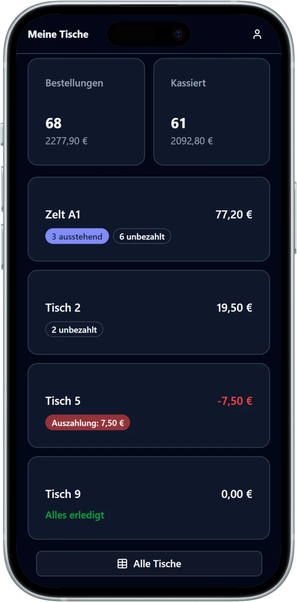
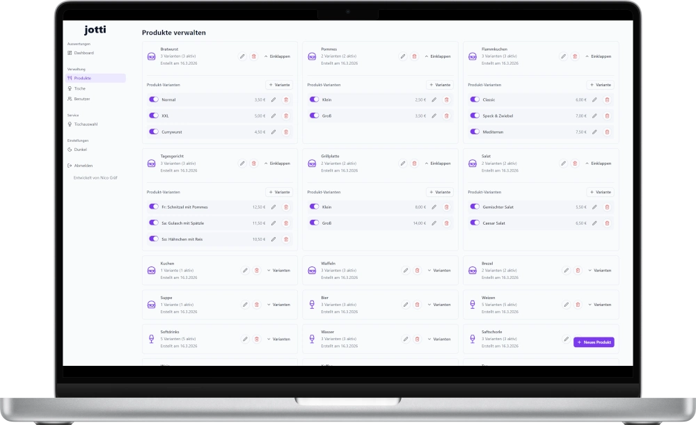
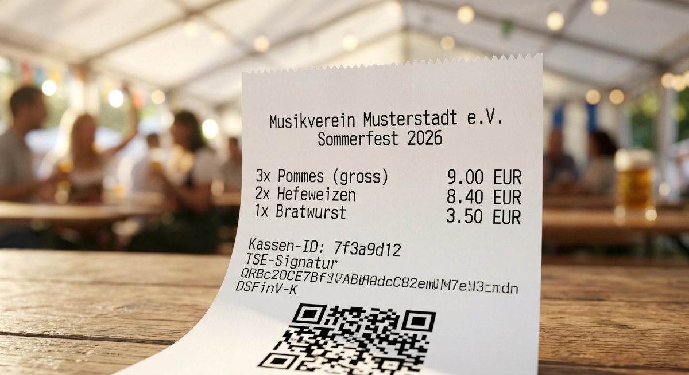
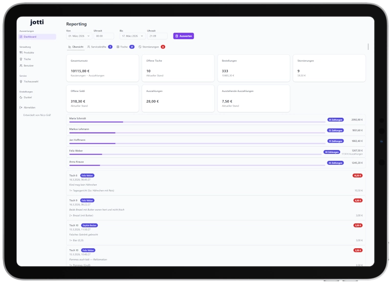

Das kostenlose Kassensystem für euer Vereinsfest.
Bestellungen aufnehmen, Ausgabe bestätigen, kassieren — am bedienten Tisch oder per Direktverkauf an der Theke, direkt auf dem Smartphone, ohne spezielle Hardware. Für Vereine und gemeinnützige Organisationen. Fiskalkonformität (TSE-Anbindung, DSFinV-K-Export) ist in Entwicklung.

Kennt ihr das?
Die meisten Vereine bewirtschaften ihre Feste mit einem dieser drei Ansätze — und stoßen dabei immer wieder an dieselben Grenzen.
Stift & Papier
Unleserliche Handschrift, verlorene Bonblöcke, keine Echtzeit-Übersicht. Am Ende sitzt ihr stundenlang zusammen, um die Abrechnung hinzubekommen. Und die KassenSichV? Damit nicht zu erfüllen.
Excel-Tabelle
Nicht echtzeitfähig, kein Mehrbenutzerbetrieb, keine Tisch-Zuordnung. Einer tippt, alle anderen warten. Keine TSE-Anbindung, keine Fiskalkonformität.
Kommerzielles POS
30–100 € pro Monat plus Hardware. Fiskalkonform, aber für 2–3 Feste im Jahr völlig überdimensioniert — und viel zu teuer.
jotti löst genau diese Probleme.
- Kostenlos — keine Lizenzgebühren, kein Abo, keine versteckten Kosten
- Keine Hardware — jedes Smartphone wird zur Kasse (BYOD)
- Einfach — nur die Features, die ein Vereinsfest wirklich braucht
- Eigener Server — volle Datenkontrolle, keine fremde Cloud
- Transparente Abrechnung — Echtzeit-Saldo pro Tisch, lückenlose Bestellhistorie, CSV- und DSFinV-K-Export
- Fiskalkonform — TSE-Anbindung, DSFinV-K-Export, Kassenbeleg, Tagesabschluss — KassenSichV-konform ab Werk

Alles, was euer Vereinsfest braucht.
Nicht mehr, nicht weniger. jotti konzentriert sich auf die Kernfunktionen — damit sich euer Team auf die Gäste konzentrieren kann.
Kassenbetrieb
Bestellungen aufnehmen
Produkte mit Varianten und Steuersätzen auswählen, Menge und Kommentare angeben, auf den Tisch buchen — alles im Browser.
Ausgabe bestätigen
Bestellte Positionen als ausgegeben markieren. Jeder weiß, was raus ist und was noch fehlt.
Kassieren
Am Tisch kassieren — Teilzahlungen und automatische Rückgeldberechnung. Offener Saldo immer im Blick.
Direktverkauf an der Theke In Entwicklung
Bestellen, kassieren und ausgeben in einem Schritt — ideal für Getränke- und Kuchentheke. Kein offener Saldo, sofort bezahlt, optionaler Abholbon für den Gast.
Stornieren & Auszahlung
Falschbestellungen rückgängig machen (Serviceleitung/Admin, Pflichtkommentar). Negativen Saldo nach Stornierung ausgleichen.
Umbuchen In Entwicklung
Bestellungen auf einen anderen Tisch verschieben — eine atomare Operation, lückenlos nachvollziehbar.
Tischübersicht
Alle Tische mit Saldo und Status auf einen Blick. Eigene Tische als Favoriten markieren, Schnellsuche per Name oder Nummer.
Küche & Ausgabe
Arbeitsbon (Küche & Theke)
Bestellungen automatisch als Arbeitsanweisung an die Druckstationen senden — pro Kategorie konfigurierbar, ganz ohne Preise. Kein Beleg, sondern reine Ausgabe-Hilfe.
Küchendisplay (KDS) In Entwicklung
Eingehende Bestellungen in Echtzeit auf einem Bildschirm in der Küche oder an der Ausgabe.
Ausgabestationen In Entwicklung
Zubereitungsstatus verwalten — Servicekräfte sehen, wann Positionen abholbereit sind.
Kassenführung
Abrechnungskreis
Fortlaufend nummerierte Kassensitzungen eröffnen und schließen. Anfangsbestand (Wechselgeld) zu Beginn erfassen.
Kassenbestand & Bewegungen
Soll-Bestand jederzeit einsehen. Geldtransit, Privatentnahmen und Privateinlagen buchen.
Kassensturz & Z-Bon
Ist-Bestand eingeben, Differenz berechnen. Formaler Tagesabschluss mit fortlaufender Nummer und Stammdaten-Snapshot.
Abrechnung & Reporting
Tagesabrechnung
Gesamtübersicht aller Umsätze, Zahlungen und offenen Beträge — nach Steuersatz aufgeschlüsselt.
Pro Tisch & Servicekraft
Detaillierte Aufstellung je Tisch. Umsatz und Transaktionen pro Servicekraft. Produktumsatz-Ranking.
Datenexport In Entwicklung
CSV-Export für die Vereinsbuchhaltung. DSFinV-K-Export als ZIP-Archiv für die Finanzverwaltung.
Finanzamtssicher. Ab Werk.
jotti ist ein elektronisches Aufzeichnungssystem nach KassenSichV und erfüllt die TSE-Pflicht nach § 146a AO — fiskalkonform, ohne Zusatzkosten für die Software.
TSE-Anbindung In Entwicklung
Integrierte Cloud-TSE-Schnittstelle (fiskaly). Jeder Vorgang wird signiert und kryptografisch abgesichert.
Kryptografische Hash-Chain In Entwicklung
SHA-256-Verkettung aller Events. Nachträgliche Manipulation ist mathematisch nachweisbar.
Kassenbeleg (auf Anforderung) In Entwicklung
Gesetzeskonformer Zahlungsbeleg nach § 146a AO: alle Positionen mit Preisen, Vereinsdaten und Kassen-Seriennummer — auf Knopfdruck, wenn der Gast ihn verlangt. TSE-Signatur, QR-Code und Steuer-Aufschlüsselung folgen mit der TSE-Phase.
Event-Sourcing
Lückenlose, unveränderliche Bestellhistorie. GoBD-konform durch Append-only-Architektur — kein nachträgliches Löschen.
DSFinV-K-Export In Entwicklung
Maschinenlesbarer Export aller Kassendaten für die Finanzverwaltung — ZIP-Archiv nach DSFinV-K v2.4.
Tagesabschluss (Z-Bon)
Immutables Abschlussdokument mit fortlaufender Nummer, Umsatzaggregation und Stammdaten-Snapshot.

Bring Your Own TSE (BYOT): Da jotti self-hosted
betrieben wird, schließen Betreiber selbst einen Vertrag mit einem
Cloud-TSE-Anbieter (z. B. fiskaly) ab und konfigurieren die
API-Schlüssel über die .env-Datei. Seriennummer,
Steuersätze (19 %, 7 %, 0 %) und ELSTER-Meldung sind dokumentiert.
In drei Schritten startklar.
Keine wochenlange Einrichtung. Kein Schulungsbedarf. Einfach loslegen.
Admin richtet ein
Produkte mit Varianten, Preisen und Steuersätzen anlegen, Tische erstellen, Benutzer einladen, Betreiber-Stammdaten pflegen.
Team meldet sich an
Jeder Helfer öffnet den Browser auf dem eigenen Smartphone, gibt das Einmalpasswort ein und setzt ein eigenes Passwort.
Loslegen
Bestellungen aufnehmen, Ausgabe bestätigen, kassieren — Tagesabschluss und Z-Bon am Ende des Abends.
jotti vs. die Alternativen.
| jotti | Stift & Papier | Kommerzielles POS | |
|---|---|---|---|
| Kosten | Kostenlos | ~0 € | 30–100 €/Monat + Hardware |
| Hardware | Eigenes Smartphone | Stifte, Bonblöcke | Terminal, iPad, Drucker |
| Fiskalkonformität | KassenSichV-konform (TSE + DSFinV-K) | ✗ | ✓ |
| Echtzeit-Übersicht | ✓ | ✗ | ✓ |
| Mehrbenutzerbetrieb | ✓ | ✗ | ✓ |
| Kassenführung | Z-Bon, Kassensturz, Bewegungen | ✗ | ✓ |
| Abrechnung | Automatisch + CSV + DSFinV-K | Stundenlang manuell | Automatisch |
| Einrichtung | Minuten | Sofort | Tage bis Wochen |
| Datenhoheit | Eigener Server | Zettelwirtschaft | Beim Anbieter |
| Vertragslaufzeit | Keine | Keine | 12–24 Monate |
| Nachvollziehbarkeit | Hash-Chain + Event-Sourcing | Fehleranfällig | Ja |
Für wen ist jotti gedacht?
jotti ist für alle gemeinnützigen Organisationen, die temporäre Gastronomie-Veranstaltungen durchführen — mit voller Fiskalkonformität, unabhängig von der Rechtsform.
Vereine (e.V.)
Sportvereine, Musikvereine, Schützenvereine, Karnevalsvereine, Fördervereine — jeder eingetragene Verein, der Feste veranstaltet.
Gemeinnützige Organisationen
gGmbH, gUG, Stiftungen, kirchliche Träger, NGOs — alle, die unter das Gemeinnützigkeitsrecht fallen.
Typische Veranstaltungen
Euer Vereinsfest. Eure Daten.
jotti speichert jede Bestellung, jede Zahlung und jede Stornierung als unveränderliches Event — kryptografisch verkettet und per TSE signiert. Nachträgliche Manipulation ist technisch ausgeschlossen. Das schafft Vertrauen — gegenüber dem Vorstand, den Helfern und dem Finanzamt.
- Event-Sourcing + Hash-Chain — lückenlose, kryptografisch gesicherte Bestellhistorie
- Rollenmodell — Admin, Serviceleitung, Servicekraft mit abgestuften Rechten
- Self-hosted — Daten auf eurem eigenen Server, keine fremde Cloud
- HTTPS — verschlüsselte Kommunikation per Let's Encrypt
- Sicheres Onboarding — Einmalpasswort + Argon2id-Hashing, keine unsicheren Account-Versände

Kostenlos. Für immer.
Kein Abo, kein Kleingedrucktes, keine versteckte Paywall. Der volle Funktionsumfang — ohne Limits bei Tischen, Produkten oder Benutzern.
- Alle Features inklusive — inkl. Fiskalkonformität
- Keine Nutzungslimits
- Keine Werbung, kein Tracking
- Quellcode einsehbar (Source-Available)
- Keine Vertragslaufzeit
- Nutzungsvereinbarung per E-Mail vor erster Nutzung erforderlich
Einzige Kosten: Hosting-Infrastruktur und ggf. Cloud-TSE — unabhängig von jotti.
Für IT-Verantwortliche.
jotti ist self-hosted per Docker Compose. Wer Docker starten kann, kann jotti betreiben.
Tech-Stack
Anforderungen
Schnellstart
cp .env.example .env # Konfiguration + TSE-API-Keys
make prod-init # SSL-Zertifikat erstellen
make prod-up # StartenArchitektur-Highlights
- Event-Sourcing für den Kassenbetrieb — lückenlose, unveränderliche Bestellhistorie
- Hash-Chain — SHA-256-Verkettung aller Events, GoBD-konforme Unveränderbarkeit
- TSE-Integration — Cloud-TSE via Adapter-Pattern, jeder Vorgang signiert
- CRUD für Stammdaten — einfache Verwaltung von Produkten, Tischen, Benutzern
- JWT + Argon2id — sichere, tokenbasierte Anmeldung
- Mobile-first — optimiert für Smartphone-Browser, Touch-Bedienung
- Source-Available — Quellcode auf GitHub einsehbar, proprietäre Lizenz
Bereit für euer nächstes Fest?
jotti ist auf GitHub verfügbar — kostenlos für gemeinnützige Organisationen, fiskalkonform und in Minuten einsatzbereit. Quellcode einsehbar, Nutzung mit kostenloser Vereinbarung.
Auf GitHub ansehen